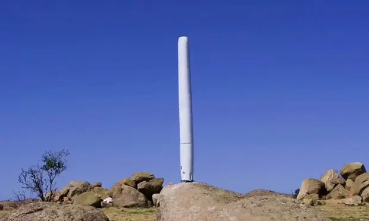
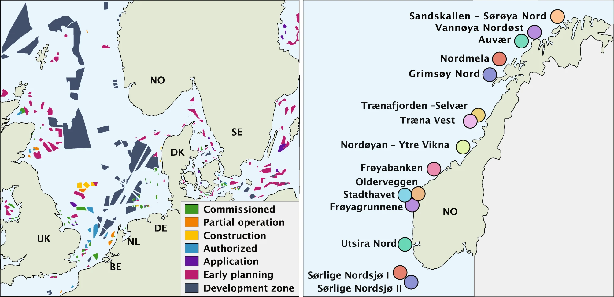
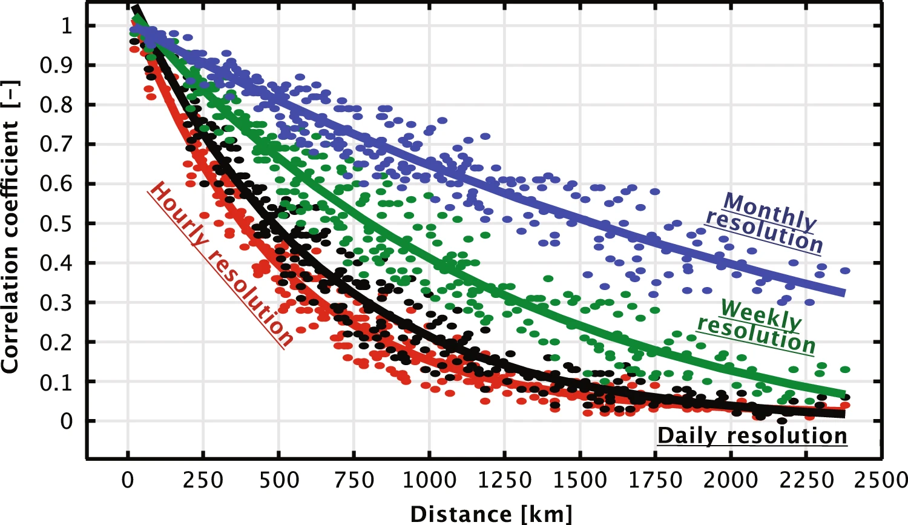
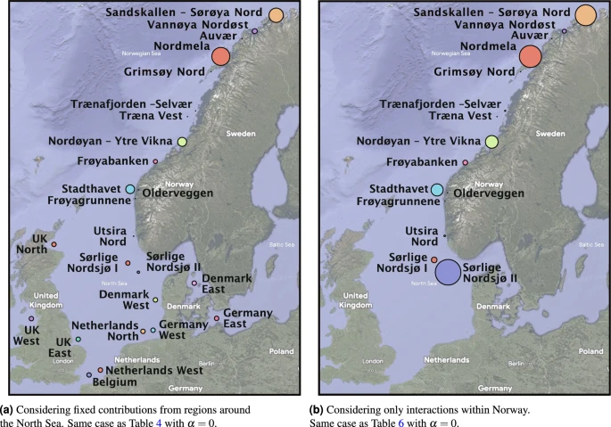

23 Wind
23.1 Installed Capacity Megawatts
| Country | MegaWatts |
|---|---|
| United Kingdom | 10,383 |
| China | 8,990 |
| Germany | 7,747 |
| Netherlands | 2,500 |
| Belgium | 2,254 |
| Denmark | 1,701 |
| Sweden | 203 |
| South Korea | 136 |
| Taiwan | 128 |
| Vietnam | 99 |
| Finland | 73 |
| Japan | 65 |
| United States | 29 |
Canary Media (2020) New York takes early lead as large-scale offshore wind starts rolling in the US
23.2 Icing
Icing can cost wind turbines up to 80% of power production
Wind turbine blades spinning through cold, wet conditions can collect ice nearly a foot thick on the yard-wide tips of their blades.
That disrupts blade aerodynamics. That disrupts the balance of the entire turbine. And that can disrupt energy production by up to 80 percent.
23.3 Bladeless
David Yáñez, the inventor of Vortex Bladeless, based just outside Madrid, has pioneered a turbine design that can harness energy from winds without the sweeping white blades considered synonymous with wind power.
The design recently won the approval of Norway’s state energy company, Equinor, which named Vortex on a list of the 10 most exciting startups in the energy sector. Equinor will also offer the startup development support through its tech accelerator programme.
The bladeless turbines stand at 3 metres high, a curve-topped cylinder fixed vertically with an elastic rod. To the untrained eye it appears to waggle back and forth, not unlike a car dashboard toy. In reality, it is designed to oscillate within the wind range and generate electricity from the vibration.
The turbine is no danger to bird migration patterns, or wildlife, particularly if used in urban settings. For the people living or working nearby, the turbine would create noise at a frequency virtually undetectable to humans.
Vortex is not the only startup hoping to reinvent wind power. Alpha 311, which began in a garden shed in Whitstable, Kent, has begun manufacturing a small vertical wind turbine that it claims can generate electricity without wind.
The 2 metre turbine, made from recycled plastic, is designed to fit on to existing streetlights and generate electricity as passing cars displace the air.
Perhaps the most ambitious divergence from the standard wind turbine has emerged from the German startup SkySails, which hopes to use an airborne design to harness wind power directly from the sky.
SkySails makes large fully automated kites designed to fly at altitudes of 400 metres to capture the power of high-altitude winds. During its ascent the kite pulls a rope tethered to a winch and a generator on the ground. The kite generates electricity as it rises into the sky and, once completely unspooled, uses only a fraction of the electricity generated to winch back towards the ground.
Today, the design can generate a maximum capacity of 100 to 200 kilowatts, but a new partnership with the German energy firm RWE could increase the potential output from kilowatts to megawatts. A spokesperson for RWE said the pair are currently looking for the ideal kite-flying site in the German countryside.

23.4 Power Supply Correlation Challenges
Hjelmeland Abstract
Offshore wind power projects are currently booming around the North Sea. However, there are inherent correlation challenges between wind farms in this area, which has implications for the optimal composition of locations and the scale-up of installed capacities. This paper is aimed at addressing the correlation problem by minimizing the variance of total wind power accumulated around the North Sea. We show that this nonlinear convex optimization problem can be solved by applying the Augmented Lagrangian Algorithm (ALA). The premise of the study is that more interconnections between the EU countries will be prioritized in order to optimize and smooth out the wind power production patterns. A publicly available dataset with historical hour-by-hour data spanning over 20 years was used for the analysis. We explore two distinct scenarios for Norwegian offshore wind development. In the first scenario, we consider the ongoing activities on the European continental side of the North Sea and their implications for Norway. Here, we illustrate the advantages of focusing on expanding wind power capacity in the northern regions of Norway to enhance the overall value of the generated wind power. In contrast, the second reference scenario neglects these interconnections, resulting in a significantly greater concentration of offshore wind development in the southern parts of Norway, particularly in Sørlige Nordsjø II. Additionally, our work estimates the wind power correlation coefficient in the North Sea as a function of distance. Furthermore, we analyze deviations and intermittencies in North Sea wind power over various time intervals, emphasizing that the perceived integration challenges are highly dependent on the chosen time resolution in the analysis.
Hjelmeland Memo
The scientific literature lacks detailed studies regarding the ecological risks of offshore wind power.
There are several initiatives underway to coordinate the development of offshore wind around the North Sea. For instance, the North Sea Energy Cooperation (NSEC) by the European Commission supports and facilitates the development of offshore grid development and the large potential for renewable energy in the region6. The group includes countries like the Netherlands, Belgium, Germany, Denmark, Norway, and Sweden. Another ongoing project is the North Sea Wind Power Hub (NSWPH) that aim to ensure that offshore wind development does not become fragmented, country by country, but transnational and coordinated.
A core concept is to build a large artificial island in the North Sea that would serve as a hub for connecting offshore wind farms in the region. The project was founded by Transmission System Operators (TSOs) from Denmark, Germany, and Netherlands.
The Norwegian government has stated plans to grant licenses for 30GW offshore wind by 2040. There are plans for over 500GW of installed offshore wind around the North Sea.

Figure: Map over the North Sea showing the status of the wind farms and map over the areas the Norwegian water resources and energy directorate (NVE) has pointed out as potential offshore wind areas.
Norway’s efforts to harness offshore wind power are well underway, with an 88MW floating wind farm, Hywind Tampen, officially launched in 2023. It is the world’s first floating wind farm to power offshore oil and gas platforms, providing electricity for the Norwegian North Sea’s Snorre and Gullfaks oil and gas fields. The estimated investment cost of Hywind Tampen was $691 million or $7.9 million per MW, with the Norwegian authorities pledging up to $262 million via Enova subsidies. In addition, the Norwegian business sector’s NOx fund offered up to $64 million. The wind farm is expected to meet about 35% of the electricity demand of the two fields. This will cut CO2 emissions from the fields by about 200,000 tonnes annually.
Studies1 that the wind power sectors in countries such as France, Germany, and Denmark will require continued subsidies to remain profitable
Cannibalization
To understand the impact that larger shares of intermittent energy have on the grid, we may introduce the cannibalization effect and its influence on the capture price obtained by intermittent energy sources17. In essence, the cannibalization effect suggests decreasing power prices when a substantial amount of energy is supplied simultaneously. As a result, the capture price obtained by these power plants could be lower than that obtained by baseload power plants, which can operate continuously.
Reducing the correlation between various offshore wind farms can lessen the overall power variability across the entire fleet. Enhanced stability in power output, in turn, increases the chances of generating electricity during peak market prices, thus leading to a higher capture rate.
Consider, for instance, that strategic placement of these wind farms might lift the capture rate from 80 to 85%. For a hypothetical 30 GW Norwegian offshore wind power fleet, this difference is significant. With a 50% capacity factor and a baseload power price of $60/MWh, this 5% boost in the capture rate could result in $394 million in additional annual revenues, equivalent to $3/MWh. This scenario highlights the importance and potential financial benefits of smart placement and operation strategies.
In light of these considerations, this paper focuses on exploring the correlation challenges related to offshore wind power in the North Sea to evaluate the potential for increasing its value, with a focus on the Norwegian case.
The concept of complementarity between wind and solar power has been suggested as a potential hybrid energy system solution to reduce seasonal variability, though its effectiveness varies depending on the temporal scale
Another innovative approach involves co-locating offshore wind and wave power to mitigate variability in individual renewable energy sources.
There are several proposals for producing hydrogen as an ancillary service to address offshore wind power variability and facilitate further expansion.
A hybrid hydrogen-battery storage system has been presented as a promising solution.
Alternative approaches, such as demand flexibility measures, have been proposed in lieu of strategically distributing wind farms.
This paper aims to contribute to the optimization of offshore wind farm placement by introducing a method to reduce overall correlation among buildouts, thus enhancing geographical smoothing. This paper focuses on a particular research gap that has been identified. A comprehensive analysis of the interactions between different sites within a country and its interactions with other North Sea producers is currently missing. We aim to fill that gap with a focused case study for Norway. The primary contributions of this paper include:
A correlation analysis of offshore wind power in Northern Europe; and,
A methodology to minimize the variance of a wind power fleet using the Augmented Lagrangian Algorithm (ALA), which has the benefit of obtaining the unique optimal solution to nonlinear, convex optimization problems.
A weighted combination of the proposed Norwegian offshore wind farm locations ensures the least intermittent power output. This approach is fundamentally different from focusing on building out in locations with the best resources and being less concerned about the variability.
Algorithm
A recent work has investigated the potential for strategically distributing wind farms in Brazil to significantly mitigate seasonal variability in offshore wind power using a genetic algorithm (GA)33. Given the nonlinear and convex nature of our optimization problem, we have determined that our proposed ALA is a more suitable choice than GA.
Marine spatial planning (MSP)
Marine spatial planning (MSP) represents another avenue for coordinating offshore wind buildouts with other marine activities, thereby maximizing synergies with offshore energy generation
Marine spatial planning (MSP) represents another avenue for coordinating offshore wind buildouts with other marine activities, thereby maximizing synergies with offshore energy generation
Marine spatial planning (MSP) represents another avenue for coordinating offshore wind buildouts with other marine activities, thereby maximizing synergies with offshore energy generation

Figure: Scatter plot of correlation coefficients (r) between different wind farms in North Sea with respect to distance and exponential curve fit of the data points. Results include hourly (1h), daily (24h), weekly (168h), and monthly (720h) time resolutions.
Correlation coefficients drop below 0.5 at distances exceeding 384km at an hourly resolution and 808km at a weekly resolution.
During longer periods of wind drought, such as the one experienced in Europe in 2021 , the geographical dispersion of wind power farms becomes less effective, emphasizing the need for backup capacity and storage for longer durations.
The majority of correlation coefficients are positive, implying that negative correlation, which would be advantageous for risk diversification, is rare.
Geographical dispersion of wind farms over long distances can significantly smoothen wind power output, but this effectiveness decreases over extended time periods.
Given that the North Sea spans approximately 580 km in width and 960 km in length, wind farms established by individual countries will inevitably impact others.
The collective output from proposed Norwegian offshore wind farms exhibits far less variability than individual parks.
If the objective is to minimize variance, less than a third of the buildouts will occur in southern Norway.
Tradeoff between maximizing wind power output and reducing correlation. This implies a need for strategic objective weighting, particularly when the ambition to diminish correlation competes with reducing the levelized cost of electricity (LCOE). Higher correlation can indeed lead to power price cannibalism.

Figure: The scale of the dots for each area represents how offshore wind power should be built out to reduce the variance of the wind power fleet as a whole with hourly (1h) resolution. Note how the model gives little weight to the Norwegian offshore wind farms in the south (especially Sørlige Nordsjø II) when including wind farms for all countries around the North Sea.
Prioritizing the development of the wind resource areas farthest away is key to reducing wind power variance around the North Sea.
As there is a lot of activity on the European continental side of the North Sea8, it would be desirable to find ways to reduce the overall wind power correlation. Building a significant portion of Norwegian offshore wind capacity in the northern regions of Norway aligns with our optimization.
This poses a dilemma, as these remote locations are also the costliest to develop. In a scenario where one accepts a higher wind power correlation, there will be more sporadic energy scarcity and abundance, and more of the aforementioned backup capacity will be required.
By 2031, Europe will only be capable of storing about 10 minutes of its electricity in batteries (i.e. 89GWh)
Norwegian hydropower, with about half of Europe’s storage capacity (i.e. 87TWh), can play a role. However, the hydropower fleet’s dispatchable power capacity is limited to just 30GW.
While expanding the Northern offshore wind farms would indeed lead to decreased correlation, it might not be economically feasible. This claim is backed by the historical costs of transmission grids in Norway, which stand at approximately $1.2 million per km per GW59. Considering Norway’s length of 1748km, the cost of a transmission line across the country would approximate $2100 million per GW transmission. This cost has to be contrasted with the potential increase in the capture rate, which could result in savings annually of $394 million, by 5% increase capture rate, as explained in the introduction. The net present value of such a hypothetical improvement is $4600 million, assuming an economic lifetime of 25 years and a discount rate of 7%. Clearly, the financial viability of such a project needs to be studied in further detail. Hjelmeland (2023) Correlation challenges for North Sea offshore wind power: a Norwegian case study
Alonzo, B., Concettini, S., Creti, A., Drobinski, P. & Tankov, P. Profitability and revenue uncertainty of wind farms in Western Europe in present and future climate. Energies 15, 6446 (2022).↩︎